THE COMPLETE PLAYER HANDBOOK · UPDATED EDITION
Learn the arena.
Own the objective.
From your first pistol spawn to a high-speed flag run. Launcher, updates, controls, combat and team systems for desktop and VR.
Start playing ↗YOUR ROUTE THROUGH THE MANUAL
Field index
New here? Read 01-04 first. Pick your mode next, then use the weapon and settings chapters as a reference.
FIELD MANUAL / 01
Your first match
Choose your arena. Learn its rules. Then make the next life count.
FPSloppa combines fast arena combat, objective modes and tracked VR weapons. Desktop and OpenXR players can play together. A mode decides how you win; a weapon ruleset decides what you carry and how it behaves. Doom is the default arena arsenal. TF and Titanball require Quake, Assault requires UT99, Bomb Defusal requires CS16, and ST requires Tribes. Instagib, Instafreeze and Chainsaw Circus supply their own fixed weapons.
This handbook covers the updated source tree at revision 12a638c, checked 8 October 2026. Defaults described here can be changed by the server. Some screenshots are archived gameplay captures or engine-rendered test views; captions distinguish them. Menus and weapon models may differ slightly in packaged builds. Gameplay is an independent adaptation of its inspirations.
- Open the launcher
Use Launch-FPSloppa from an updated PC package, or
./run-launcher.sh/run-launcher.batin a source checkout. The large PLAY IN VR button starts VR; Play on desktop starts mouse-and-keyboard play. Start your OpenXR runtime before choosing VR. Source requires Godot 4.7.2. Standalone Android remains experimental. - Set your identity
Choose your name, optional clan tag and avatar in the launcher. Check the colour preview and save your profile; launching also saves it. The selected avatar and identity travel with a direct join. Use a bundled avatar first.
- Start with practice
Open Host/Practice, choose DM and Doom, select a map, then PRACTICE VS BOTS. Normal practice starts with three bots. Try moving, collecting a shotgun, firing and finding health.
- Learn a team objective
Try CTF after learning the map routes. Read the mode card and watch your own flag state before attempting a capture.
- Join friends
Select a favourite server and Join VR or Join Desktop, or enter an address in Direct join. Current player counts, map and mode appear in the list. If UPDATE TO replaces the play controls, complete the update first. Clients and servers need matching builds; missing maps download from the host.
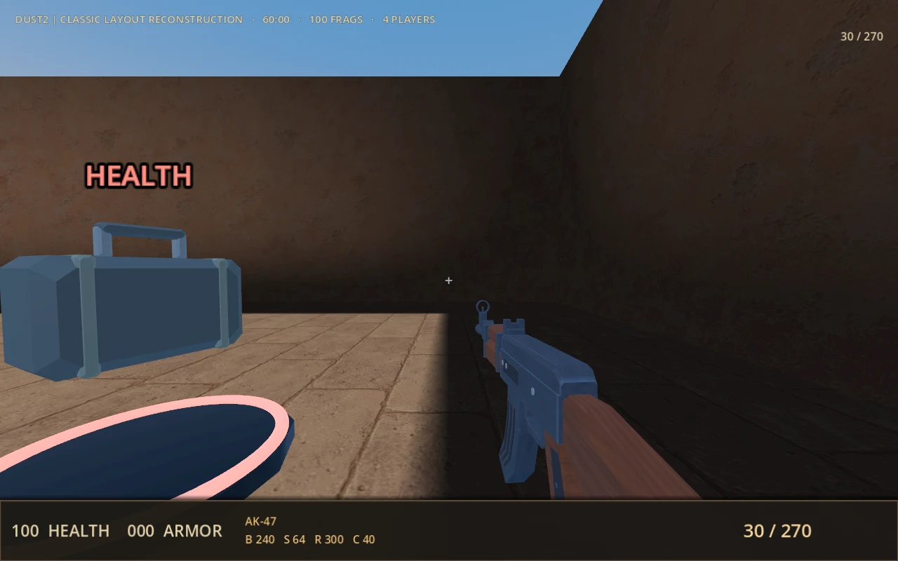
Host, join or watch
Menu-hosted matches allow eight players total, including the host. Dedicated servers default to eight, accept up to 32 configured slots, and treat counts above 16 as unsupported. Spectators occupy a slot. For a LAN game, enter the host computer’s LAN address. 127.0.0.1 connects only to a host on the same computer. Internet hosts normally need their selected UDP port, default 7777, allowed through the firewall and forwarded by the router. There is no automatic matchmaking, NAT relay or host migration.
Enable Join as spectator to watch without an avatar, collision, combat or objectives. Spectators fly with WASD and Space/Ctrl on desktop, or movement stick plus turn-stick vertical input in VR. Their role persists through map rotation.
Source notes: README.md · GAMEMODES.md · STANDALONE.md · DESKTOP-LAUNCHER.md
↑ ContentsFIELD MANUAL / 02
The desktop launcher
Set up your player, find a match and keep the client ready to play.
The launcher stays on the desktop, including when it starts a VR game. Its title-art background and large PLAY IN VR button make VR the main entry point; the smaller Play on desktop link opens the same game without a headset. These controls open the normal game menu. The server and Direct join controls connect straight to a match.
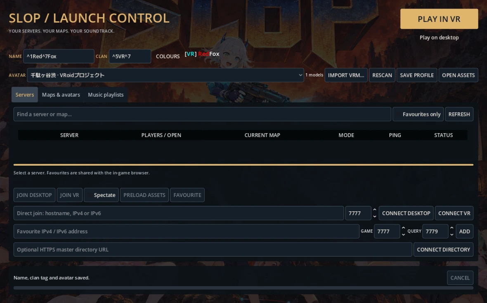
Your name, clan and avatar
Enter up to 18 visible characters for your name and 8 for the clan tag. Clan brackets are added for you. Pick an installed VRM, or use IMPORT VRM and RESCAN. SAVE PROFILE keeps the selection; every launch saves it too. Name changes apply to the next connection, while the in-game MODEL picker can change your avatar after joining.
Q3A-style ^ codes colour the following letters without taking up visible-character space. The COLOURS menu inserts a code into the last name or clan field you selected. For example, name ^1Red^7Fox and clan ^5VR display a cyan [VR], red Red and white Fox. Type ^^ for a literal caret.
| Code | Colour | Code | Colour |
|---|---|---|---|
| ^0 | Black | ^4 | Blue |
| ^1 | Red | ^5 | Cyan |
| ^2 | Green | ^6 | Magenta |
| ^3 | Yellow | ^7 | White |
Colours appear in world nametags, the scoreboard and chat/event text. Team symbols retain their team colours; coloured names do not reveal players through walls. Clan tags are cosmetic labels, not registered memberships.
Favourites and direct connections
- Add a favourite
Enter a numeric IPv4 or IPv6 address, the game port and query port, then ADD. The usual ports are 7777 for joining and 7779 for status queries; the server operator must enable the query service. Favourites are shared with the in-game browser.
- Read the row
Check humans, bots, open seats, current map, mode and query ping. Select the row for version, weapon rules and further details. REFRESH updates status; known servers also refresh every 20 seconds. Bots can give up seats to humans.
- Join in your preferred mode
Choose JOIN VR or JOIN DESKTOP for the selected server. SPECTATE applies to either. Known full servers and protocol mismatches disable joining. A missing status response still permits a direct connection.
- Connect without saving
In Direct join, enter a hostname, IPv4 or IPv6 address and game port, then CONNECT VR or CONNECT DESKTOP. No favourite, query port or directory is required. Your saved name, clan and avatar accompany the launch.
Preload, import or submit BSP and VRM files
| Action | What it does |
|---|---|
| Import locally | Add BSP/VRM files in Maps & avatars and validate them into the external library. Original files stay where they were. The 25,000,000-byte limit applies to each file; VRMs must be self-contained humanoid models and BSPs need valid spawns. |
| Preload assets | Select a server, then preload its current map and announced avatars. This briefly joins as a spectator and uses a slot. It does not download the entire map rotation. |
| Submit to server | Select files and a server. The launcher imports locally, connects temporarily and waits for server acknowledgement. BSP permissions, storage budgets and upload cooldowns still apply. Submitting VRMs does not replace your saved avatar. |
| Progress / Cancel | File transfers show byte progress; connecting and validation show a waiting state. Cancel disconnects the transfer worker. Verified cached files and uploads already acknowledged by the server remain. |
For custom soundtrack setup, open the Music playlists tab and follow Music & playlists.
When Update replaces Play
Updater-enabled Linux and Windows packages check the latest public stable GitHub release on startup. Checks are cached for an hour; CHECK UPDATES requests a new check. Drafts and prereleases are skipped. When a newer client is confirmed, UPDATE TO replaces VR, desktop and join controls until it is installed. RELEASE NOTES explains the release.
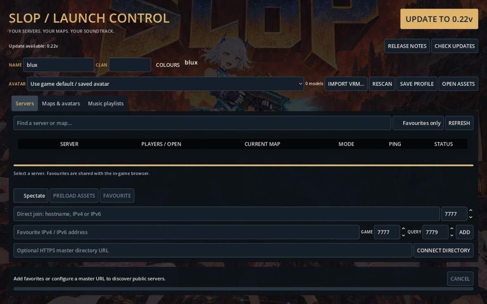
- Download
Press UPDATE TO and watch download progress. You can cancel the download. The launcher validates the complete archive before installing it.
- Close running clients
The separate installer waits for game clients, launchers and asset workers from this installation to close. Once file replacement begins it cannot be cancelled.
- Resume play
Successful installation reopens the launcher. If interrupted, run Launch-FPSloppa again to resume recovery. Keep the .launcher-update folder until recovery finishes.
Custom maps, avatars, maplists, playlists, preferences and extra expansion content are preserved. Conflicting local edits to program files stop installation. An offline check permits play if no newer version was already known; an already-confirmed update remains required. A rejected or unavailable archive does not unlock an outdated client: retry CHECK UPDATES or obtain a compatible full package.
Source notes: DESKTOP-LAUNCHER.md · name_style.gd · launcher.gd
↑ ContentsFIELD MANUAL / 03
Controls & handling
Default bindings, with the exceptions that matter in a match.
Bindings can be changed under Settings → Controls → Bindings. Desktop and VR have separate tabs and separate resets. The tables below describe fresh default settings; your saved bindings take precedence. A/X means the lower face button for that controller, and B/Y means the upper face button.
Mouse & keyboard
| Input | Action |
|---|---|
| W A S D / mouse | Move / aim. Shift walks. |
| Space | Jump; hold to swim upward. With Tribes, hold to ski. |
| Ctrl / Z | Hold crouch / toggle prone. Ctrl also swims down or flies down as spectator. |
| Left / right mouse | Primary fire / alternate fire. Right mouse fires the second Doom pistol. |
| 1-7 / wheel | Select weapon slots / cycle owned weapons. Doom: 1 melee, 2 pistols, 3 shotguns, 4 chaingun, 5 rockets, 6 plasma, 7 BFG. Slots depend on arsenal. |
| 8 / 9 / 0 | UT99 sniper / Ripper / translocator. |
| E | Use: doors, TF ability, contextual objectives, Tribes pack/vehicle interaction. |
| F / R | Weapon whip / CS reload. |
| Q | Hold Tribes jets. DE uses Q to holster selected grenades. |
| Tab / Esc | Scoreboard / menu or resume. |
| Enter / Y | Public chat / team chat. Enter sends; Esc cancels. |
| V / B | Proximity push-to-talk / team push-to-talk. B is a contextual shop control in DE preparation and Tribes inventory. |
| Fire / Space when dead | Respawn after the arena delay. DE waits until the next round; Freeze modes require thawing or a round reset. |
VR controllers
| Hand / input | Action |
|---|---|
| Movement stick (left by default) | Head-relative movement; click to jump/swim, hold click to ski with Tribes. |
| Turning stick (right by default) | Horizontal: turn. Vertical: ability/grenade selection when the wheel is closed; vertical flight for spectators. |
| Weapon-hand trigger | Primary fire. Aim with the weapon, independently of your head. |
| Support-hand trigger | Second Doom pistol, UT alternate fire, CS alternate action or Tribes zoom, depending on equipment. |
| Weapon-hand stick click | Open the weapon wheel. Tilt toward a weapon and release to equip; click again to cancel. Stations/DE preparation substitute the purchase wheel. |
| Support-hand grip near fore-end | Two-handed support on eligible long guns. Release for one-handed aim. |
| Movement-hand A/X | Use. Default Touch left X; Index left A. |
| Movement-hand B/Y | Scoreboard. Default Touch left Y; Index left B. |
| Turning-hand B/Y | Menu. Right B by default; Touch also supports the left menu button. |
| Weapon-hand A/X | CS reload/eject; hold for Tribes jets. Context depends on arsenal. |
| Support-hand grip | Default proximity PTT. At the shoulder, grip then trigger operates team radio. |
| Point + trigger | Select menu controls. Trigger-drag or joystick-scroll dropdowns. |
Gun handedness and movement/turning stick roles are separate settings. Mirroring gun hand moves weapon and support interactions; do not assume “right hand” after changing it. A physical swing drives VR fists, Quake axe and CS knife contact. Ordinary trigger presses do not replace these swings.
Context-specific keys
| Mode / system | Additional defaults |
|---|---|
| DE buying and bomb | B opens shop during preparation; 1-9 or click selects. E draws/uses bomb; 0-9 enters digits; G drops held bomb. E begins defusal, then digits or J/K/L for kit wires. 4 selects utility; hold/release fire throws; Q holsters. |
| Tribes equipment | B inventory, G shoulder-item selection, H repair kit, T flag toss, C Command PDA. Hold right mouse for zoom; X or wheel selects 2×/5×/10×/20×. |
| Demo playback | Tab switches player, C switches camera, P pauses, arrows seek five seconds. Space also pauses outside free camera. |
Source notes: bindings.gd · VR.md · SESSION_FEATURES.md · BOMB-DEFUSAL.md · ST-TRIBES.md
↑ ContentsFIELD MANUAL / 04
Movement, survival & the HUD
Stay mobile, manage supplies and understand what a hit actually costs.
Read your status before committing
The HUD shows health, armour, ammunition and match progress. Doom/Quake/UT usually show a shared ammunition pool; CS displays loaded/reserve. Tribes uses the armour field for personal energy, with armour condition represented by health. Team indicators and objective reminders tell you who you are fighting for and where a carried flag must go. Team name badges use a red diamond or blue circle as well as colour.
Movement fundamentals
Most arena modes use Quake-style acceleration, ground friction and air strafing. Release and press jump for each hop. Directional input lets you steer in the air; releasing it preserves existing momentum. Stairs step automatically and moving platforms cycle on their own. Hold jump to swim up. In VR, backward hand strokes propel you through water in your look direction; look down to dive.
On supported DE layouts, movement changes to CS-style weapon speeds, friction, air strafing and jump fatigue. Repeated hops lose efficiency. Players can stack and perform crouch-to-stand boosts with teammate coordination. Choosing CS weapons in an ordinary arena does not, by itself, enable DE movement. Tribes skiing and jets have their own movement loop.
Health, armour and spawning
Ordinary Doom arena lives begin at 100 health, dual pistols and 50 shared bullets. Death resets inventory. Arena spawn protection lasts 1.5 seconds and ends early when you fire. Manual respawn is available after two seconds; automatic respawn follows three seconds later. Suicides subtract a frag. Class, Freeze, ST and DE rules override parts of this cycle.
Absorption is limited by remaining armour. Strong armour buys time; it does not replace health. Damage feedback includes hit confirmation, directional cues, pain feedback and controller pulses where supported. A weapon muzzle pressed into a wall can be blocked even when you can see past the edge with your head.
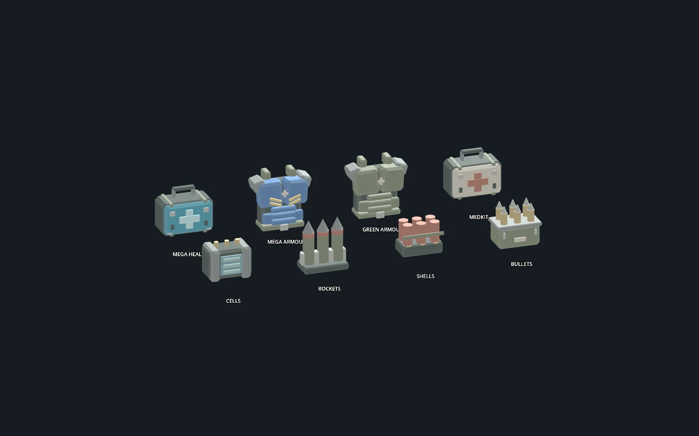
| Supply / event | Ordinary arena behaviour |
|---|---|
| Map weapons | Respawn after 5 seconds; TDM uses 30 seconds, including the strongest slot. |
| Ammo, health and armour | Respawn after 30 seconds. Plan routes that revisit supplies rather than waiting in exposed positions. |
| Death drops | A non-starting equipped weapon can drop; one player can collect it, and it expires after 30 seconds. DE requires Use and preserves only loaded rounds. |
| Rocket splash | Can hurt the shooter and produce rocket jumps. World cover blocks splash. |
| Weapon whip | F or a deliberate VR weapon swing: 10 damage before armour, 0.8-second cooldown, one victim per swing. Slow down before a new VR swing. |
| Physical kicks | With valid full-body foot tracking, a deliberate raised-foot swing shares the whip cooldown. Fixed-loadout modes restrict physical melee. |
Think in routes, range and timing
Short-range spread weapons reward close, exposed targets. Hitscan weapons resolve a shot immediately; traveling projectiles require leading movement. Splash weapons threaten routes and corners but still respect cover. Change elevation or direction after shooting so the opponent cannot simply return fire at your last position. Listen for item pickups, pain and spatial footsteps to decide whether to push or recover.
Friendly fire is normally off. Servers may enable it, so check before firing explosives through teammates. In TDM, suicides and team kills reduce the team’s frag score. Spectators cannot block, damage or participate in objectives.
Source notes: README.md · SESSION_FEATURES.md · WEAPON-RESPAWNS.md · BOMB-DEFUSAL.md · VR.md
↑ ContentsFIELD MANUAL / 05
Choose your game mode
The objective changes what a good fight looks like.
Use this directory to pick a mode, then read its detailed chapter. Limits below are defaults where stated. Host options, server configuration and enabled map rotations determine what is available in your session.
| Tag | Mode | Win condition | Equipment | What changes |
|---|---|---|---|---|
| DM | Deathmatch | Highest individual frags | Arena arsenal | Learn weapons, spawns and supply routes. Default frag limit 20. |
| TDM | Team Deathmatch | Team frags | Arena arsenal | Red versus blue. Suicide/teamkill penalties reduce team score; weapon respawns take 30 s. |
| CTF | Capture the Flag | Flag captures | Arena arsenal | Return enemy flag to your home flag while yours is home. Default capture limit 5. |
| KOTH | King of the Hill | Hold time | Arena arsenal | One point/second while uncontested. Multiple hills rotate every 30 s; single hills stay fixed. Target 120. |
| IG | Instagib | Individual frags | One-hit railgun | Unlimited ammunition, piercing shots, 1.5 s firing interval. Walls still protect. |
| FT | Freeze Tag | Team elimination rounds | Arena arsenal | Lethal hits freeze. Thaw teammates; freeze the whole enemy team to score. |
| IF | Instafreeze | Team elimination rounds | One-hit railgun | Instagib weapons with Freeze Tag rescue and scoring. No pickups or physical melee. |
| CC | Chainsaw Circus | Individual frags | Chainsaw only | Health drains 3/s after protection. Enemy saw damage heals you up to 100. No pickups. |
| TF | Team Fortress | Class-based flag captures | Quake classes | Nine roles, abilities and engineering. Own flag need not be home to capture. |
| AS | Assault | Complete objectives fastest | UT99 | Two attack legs with ordered objectives. The second attack races the first team’s time. |
| DE | Bomb Defusal | Round wins | CS16 | Buy equipment, plant or defuse; one life per round. Default first to 16. |
| ST | Tribes | Flag captures | Tribes | Skiing, jets, armour kits, base energy, stations, deployables and vehicles. |
| TB | Titanball | Deliver or stop the Titan | Quake classes | Red escorts the piloted BA-2; Blue wins if the clock expires. |
Arena modes: DM, TDM, IG and CC
DM rewards individual kills and supply control. TDM rewards the same fundamentals with team protection and shared scores; holding a weapon spawn matters more because of the longer respawn. Default arena matches run to the score limit or ten-minute time limit.
IG removes ammunition management and gives everyone the same penetrating railgun. Make the first shot count, then use cover during the 1.5-second firing interval. Ordinary weapon-variant selection does not change that railgun.
CC is a chase-and-contact mode. The constant health drain forces engagement: damage actually removed from an enemy’s health by your saw heals you, up to 100. Map supplies and physical weapon-whip attacks are disabled. On desktop, saw reach is 0.95 m; in VR, contact follows the visible blade with a short tip allowance. Two live saw blades meeting before a body hit can parry, causing no damage and a 300 ms recovery for both players.
Which arsenals can you choose?
| Modes | Weapon selection |
|---|---|
| DM, TDM, CTF, KOTH, FT | Selectable arena rulesets. Tribes personal armour, packs, skiing and jets work here; ST infrastructure does not. |
| IG, IF, CC | Fixed railgun or chainsaw behaviour regardless of variant preference. |
| TF and TB | Quake class arsenal, forced by the mode. |
| AS | UT99; translocator disabled. |
| DE | CS16, with economy and restricted map selection. |
| ST | Tribes only, on ST maps only. |
Source notes: GAMEMODES.md · RELEASE-0.4v.md · WEAPON_VARIANTS.md · TITANBALL.md
↑ ContentsFIELD MANUAL / 06
Flags, hills & frozen teammates
Team objectives are won by preserving progress, not just collecting kills.
CTF: steal, return, capture
- Take the enemy flag
Touch it while alive. You carry the objective while retaining normal combat.
- Bring it home
Use cover and escort. Death, disconnect or a team change drops the flag.
- Check your own flag
Ordinary CTF requires your own flag at home. Touch your dropped flag to return it; an unattended flag returns after 30 seconds.
- Cross your capture point
Bring the enemy flag to your home flag. The capture scores for your team and produces an announcement.
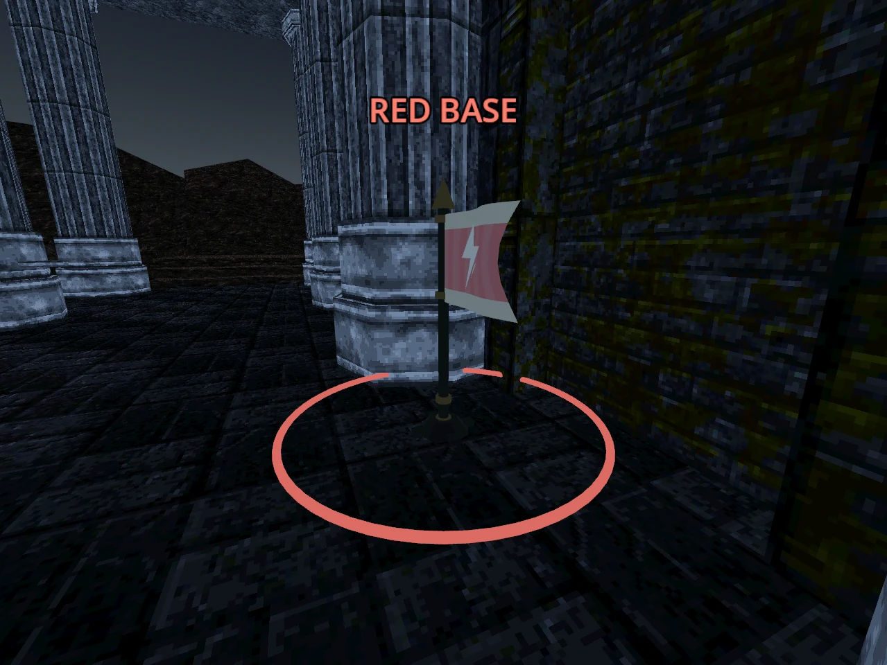
KOTH: control the active hill
One team occupying the active hill earns one point per second. Both teams present pause scoring. On maps with multiple authored hills, the hill moves every 30 seconds even when empty or contested; watch the countdown above the ring. Single-hill layouts stay fixed. Moving the hill clears ownership and fractional scoring credit. Learn each map’s site order and leave stalled fights early enough to reach the next hill with teammates.
FT and IF: a rescue is a second chance
Lethal combat freezes opponents in place instead of starting a normal respawn. Airborne statues fall to the ground. If a frozen player falls out of the arena, they return to a spawn still frozen. Frozen players cannot move or attack. Environmental deaths follow the mode’s existing respawn handling.
Thawing restores the teammate in place with normal protection. Freezing the entire opposing team awards one team round, then resets after three seconds. The frag limit counts team rounds won, not raw eliminations. IF uses the unlimited Instagib railgun and disables pickups and physical melee; FT keeps the selected arena arsenal. Guard rescues from a second angle instead of clustering every teammate around one statue.
Source notes: GAMEMODES.md · TF.md · ST-TRIBES.md · KOTH-ROTATION.md
↑ ContentsFIELD MANUAL / 07
Team Fortress & Assault
Specialist roles, defensive structures and ordered attacks.
TF: choose a job, then equip for it
TF requires Quake weapons. Open TF CLASS to queue a new class for the next respawn. Use/E activates the class action. Map weapon entities become ammunition caches rather than handing every class every gun. Home resupply and Engineer dispensers sustain a team push. Capture at your team’s capture point, which can differ from the flag’s home. Your own flag can be away; defenders cannot touch-return a dropped flag.
| Class | HP / armour · speed | Arsenal and role | Ability |
|---|---|---|---|
| Scout | 75 / 25 · 125% | Axe, shotgun, nailgun. Fast runner. | Sprint 3 s; 10 s cooldown. |
| Sniper | 90 / 25 · 90% | Axe, nailgun, shell-fed sniper rifle. Watch approaches. | Focus for 4 s increases rifle damage and halves movement; 12 s cooldown. |
| Soldier | 150 / 100 · 85% | Axe, shotgun, super shotgun, rockets. Escort or defend. | Aimed grenade; one rocket, 8 s cooldown. |
| Demoman | 120 / 75 · 95% | Axe, shotgun, grenade launcher. Deny routes. | Throw a pipe; use again after 0.7 s arming to detonate. 8 s reuse cooldown. |
| Medic | 110 / 50 · 110% | Axe, shotguns, super nailgun. Keep pushes alive. | Heal 35 HP and extinguish within 6 m; 2 s cooldown. Regenerate 3 HP/s. |
| Heavy | 200 / 150 · 65% | Axe, shotguns, shell-fed assault cannon. Hold a lane. | Brace 4 s: 35% less combat damage, half movement; 12 s cooldown. |
| Pyro | 125 / 75 · 100% | Axe, shotgun, flamethrower, incendiary cannon. Close pressure. | Napalm costs 20 cells; 10 s cooldown. Flame causes afterburn. |
| Spy | 90 / 25 · 105% | Knife, tranquilizer, super shotgun, nailgun. Infiltrate. | Disguise as nearest enemy. Server can replace disguise with cell-powered invisibility. |
| Engineer | 100 / 75 · 100% | Spanner, railgun, super shotgun. Build and maintain. | Choose sentry/dispenser. Each costs 60 cells; repair 40 HP for 10 cells. |
Buildings and deception
Engineers can maintain one sentry and one dispenser. Construction takes three seconds and buildings have a 120-second lifetime and 150 HP. Sentries attack visible enemies within 18 m; dispensers restore nearby teammates within 3 m. Buildings cannot block player movement or occupy invalid spawn/flag positions. Shooting and explosions can destroy them.
A Spy disguise copies an enemy’s appearance and apparent identity for opponents; teammates still see the Spy. Firing, damaging melee, taking damage or carrying a flag breaks the disguise. Voice still identifies the actual speaker. Sentries can be fooled by a valid enemy-team disguise. The optional cloak policy uses cells; read the class panel for the server’s current rule.
Physical TF abilities in VR
With physical interactions enabled, Medics heal with a short hand stroke on a teammate; Engineers slap friendly structures to repair. Withdraw before repeating. For Soldier, Demoman or Pyro, hold support grip and press support trigger to draw ordnance, swing, then release grip to throw. Gentle releases drop it. The fuse starts on release. The same chord activates other class abilities or detonates an armed pipe. Shoulder radio takes priority; put it away first. Use remains available.
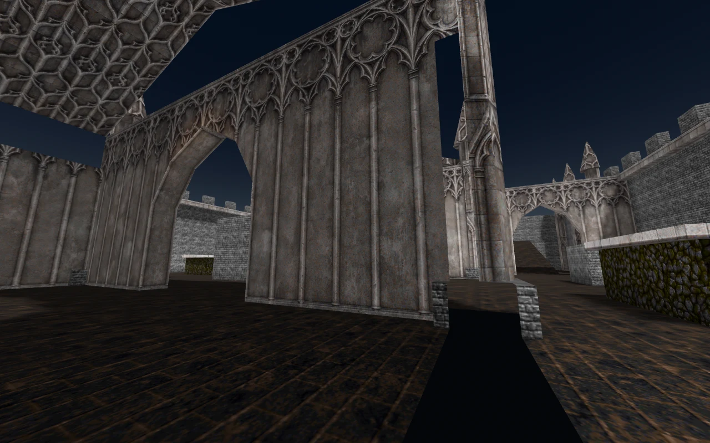
AS: two attacks against the clock
Assault uses UT99 weapons and starts players with an Enforcer and impact hammer. Classes and the translocator are unavailable. Complete the objectives in order, then swap attack/defence roles. The return attack must beat the first team’s completion time. If neither attack finishes, the match is a draw.
| Map | Attack plan |
|---|---|
| HiSlop | Advance through the train and complete two ordered objectives. Guarded inter-car crossings and sentries reward coordinated timing. |
| Frigate | Use harbour, deck or underwater approaches. Destroy the 240 HP aft compressor with weapon damage, then activate the gun console on the bridge. |
| Expansion: Pumpfac, Skyville, Twintower, Atlantica | Follow the current objective indicator through each ordered stage. Touch/switch goals use native interaction controls; destructible goals need weapon damage. Future stages cannot be completed early. |
VR touch consoles show amber PRESS / USE for the current objective, grey LOCKED for later objectives and green DONE after completion. Press with a short hand motion or use the bound Use action. Desktop touch objectives use proximity activation. A destructible objective such as Frigate’s compressor must be shot. Activated objective doors remain unlocked for that attack leg.
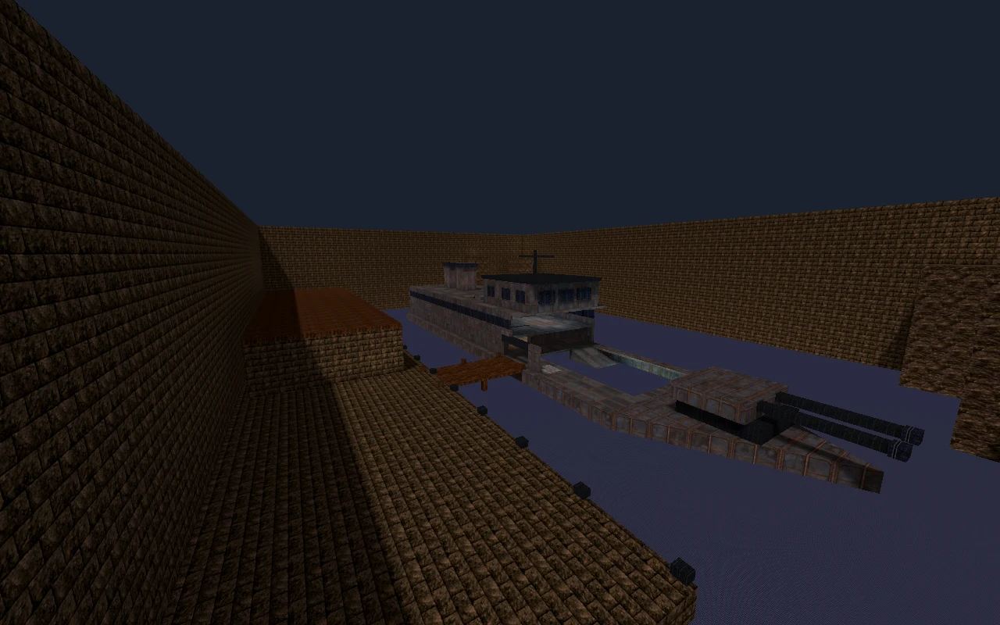
Source notes: TF.md · TF-ARSENAL-AUDIT.md · fortress.gd · AS.md
↑ ContentsFIELD MANUAL / 08
Bomb Defusal
Buy with a plan. Live through the round. Play the bomb.
DE forces CS16 weapons on the DE-only rotation. The complete installed list has Aztec and Train reconstructions plus 14 supported converted layouts, including Dust2, Inferno, Mirage, Westwood and Nuke Rarea. Red/Blue are permanent teams; Terrorist/Counter-Terrorist are the roles that swap at halftime. Read the role announcement each half. You get one life per round.
- Preparation · 15 s default
Movement and combat freeze while you buy at spawn; reloading remains possible. B opens the shop on desktop, weapon-hand stick click in VR. Purchase armour, a primary, ammunition and utility. CT can buy cutters.
- Live round · 120 s default
T carries the bomb toward A or B. CT defends sites and approaches. Killed players and late arrivals wait for the next round, with a free camera.
- Plant · fuse 45 s default
After a valid plant, killing every T is not sufficient for CT: the planted bomb must still be defused. Defend the bomb or reach it before the fuse expires.
- Resolve and repeat
T wins by eliminating CT or detonating. CT wins by defusing, eliminating T before a plant, or letting the unplanted round expire. Results remain for five seconds.
Defaults are first to 16 wins, with a side switch after 15 rounds and a possible 15-15 draw after 30. Preparation, round time, fuse and win limit are configurable. Survivors keep equipment; deaths return with knife and role pistol (Glock for T, USP for CT), plus 60 shared pistol rounds. Halftime resets cash and equipment.
Money, inventory and utility
Start with $800; the cash cap is $16,000. Carry one primary, one sidearm and a knife. Buying a replacement drops the previous gun. Use/E picks up a nearby dropped weapon, swapping the gun already in that slot; walking over it does not. Only its loaded rounds transfer, including a chambered round, not the previous owner’s reserve pool. T can buy AK; CT can buy M4 and cutters. Either team can use an enemy gun after picking it up.
| Purchase | Cost | Purchase | Cost |
|---|---|---|---|
| Glock / USP / Deagle | $400 / $500 / $650 | M3 / XM1014 | $1,700 / $3,000 |
| MP5 / P90 | $1,500 / $2,350 | AK / M4 | $2,500 / $3,100 |
| M249 / AWP | $5,750 / $4,750 | Kevlar / vest + helmet | $650 / $1,000 |
| CT cutters | $200 | Primary / pistol ammo | $60 per magazine |
Kills pay $300 and planting/defusing pays the actor $300. Team outcomes and losing streaks award team cash; a losing T side gets a plant bonus. Surviving T players receive no loss payment when an unplanted round times out. Avoid spending everything on a gun without enough ammunition to use it.
Buy HE, flash and smoke in GRENADES. Desktop: 4 selects, hold/release Fire throws, Q holsters. VR: select through the wheel or turn-stick, then support grip + trigger, swing and release. HE damages, flash disrupts vision and smoke obscures a lane; none guarantees a safe crossing. Ordinary arena supplies and arena jetpacks are disabled.
Planting, step by step
| Desktop | VR |
|---|---|
| E draws your carried bomb. | Grip the bomb on your chest with the weapon hand; hold it while the gun is stowed. |
| Type the displayed digit sequence using 0-9. | Press the displayed digit four times with the free index fingertip. Withdraw between presses; a wrong digit resets progress. |
| Use again while armed to mount on a nearby aimed surface, or the floor in front. | Within five seconds of arming, press the back of the bomb flush against a valid floor, crate or wall at A/B. |
| G drops a held bomb. | Use while holding drops the bomb; releasing grip normally returns it to the chest. |
Planting needs one solid backing surface, within reach, at a marked site. The centre must be no more than 1.5 m above standable ground with access for a defender. There are no fixed planting sockets. If the carrier dies, another living T can recover the dropped bomb with Use or a tracked-hand grip. Recovery puts it on the chest; draw it again to plant.
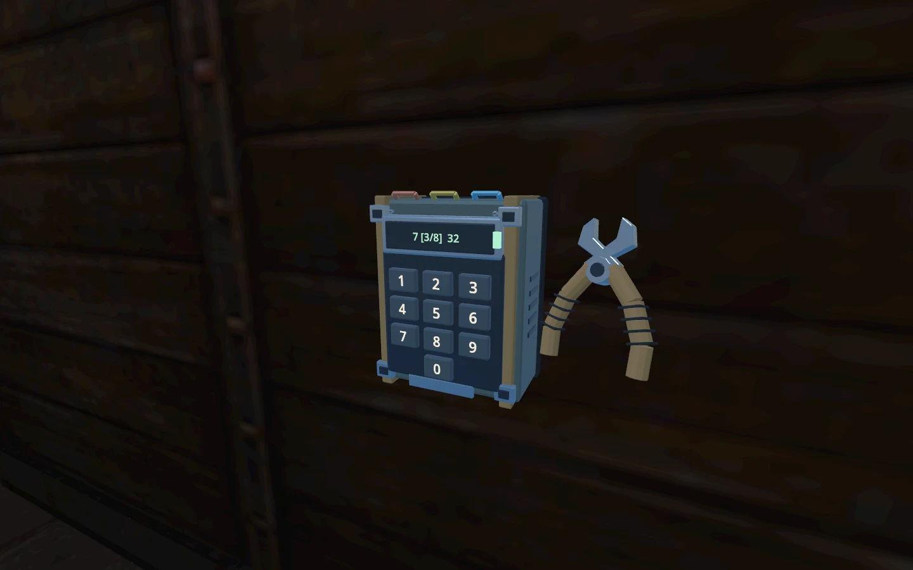
Defusing
Without a kit, CT enters the displayed eight-digit sequence. With a purchased kit, cut the three exposed wire loops. Desktop: Use starts defusal or equips cutters; type digits or press J/K/L for wires. VR: grip the chest cutters with the weapon hand, touch a loop with the tip, then make a fresh trigger press for each cut. Holding the trigger does not repeat cuts. Only one player can work on the bomb at a time.
Stay within reach. Leaving, dying, opening a menu or losing the interaction interrupts the attempt. Crouching close to a low, upward-facing planted bomb provides a prone-height access assist. Use the physical keypad and valid-surface outline; site markings are on the environment.
Source notes: BOMB-DEFUSAL.md · CS16-GRENADES.md · VOICE.md
↑ ContentsFIELD MANUAL / 09
ST: speed, energy & infrastructure
A flag run begins well before you reach the enemy base.
ST is Tribes CTF on its own terrain-and-base maps. The complete installed rotation has 25 maps: Stonehenge, Raindance, Katabatic and 22 Tribes 2 Classic adaptations, including Scara Brae, Broadside and LakeFront. ST maps belong only to ST and force Tribes equipment. Light, Medium and Heavy armour trade mobility for durability and capacity. Personal energy fuels jets, energy weapons and active packs; shared team energy pays for equipment and infrastructure services. These are different resources.
The ski-and-jet loop
Hold Space or movement-stick click to ski after jumping. Skiing reduces ground friction; downhill terrain converts height into speed. Hold Q or weapon-hand A/X for jets. Release ski to regain walking traction or brake. Save energy for the climb, escape or final correction rather than holding jets everywhere.
| Armour | Health / energy | Walk speed | Gun slots | Special restriction |
|---|---|---|---|---|
| Light / Peltast | 100 / 60 | 11 m/s | 3 | Only armour that can pilot; laser rifle needs Light + energy pack. |
| Medium / Hoplite | 152 / 80 | 8 m/s | 4 | Flexible combat and support capacity. |
| Heavy / Myrmidon | 200 / 110 | 5 m/s | 5 | Required for mortar; can ride as a passenger. |
Every ST life starts Light, with blaster, chaingun, disc launcher, one repair kit and no pack; disc is selected. Expensive saved favourites are not free on respawn. A friendly powered inventory pad opens the buy wheel within about 2.5 m and line of sight. Refit, save favourites, resupply and repair there. Purchases preserve existing damage and personal energy; they do not instantly refill your jet charge.
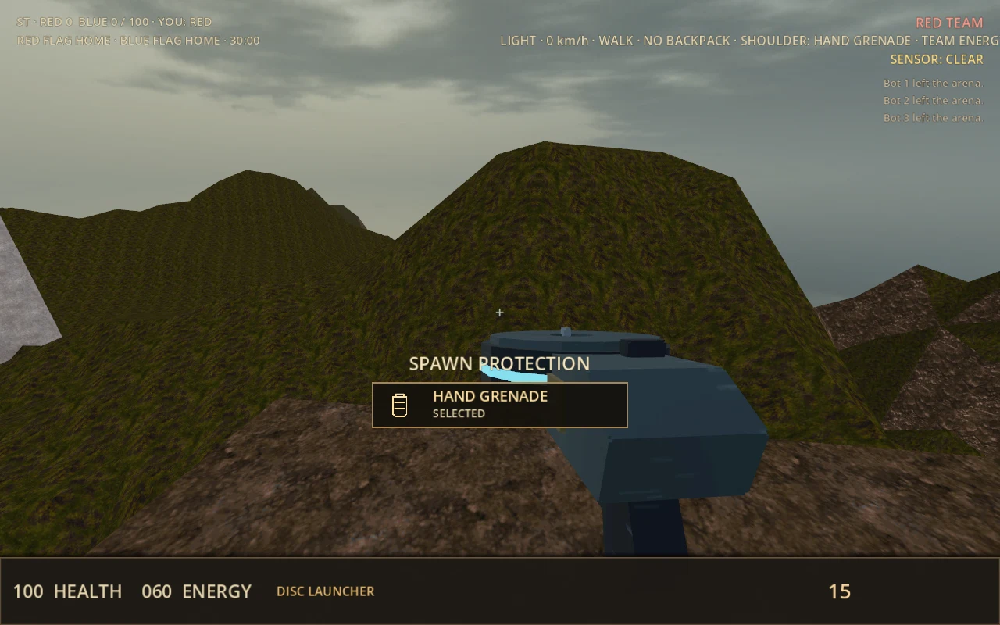
Flag running and recovery
Touch the enemy flag and bring it to your own flag while yours is home. Captures award one team point and five personal points. Dropped flags inherit momentum and bounce; touch your own to return it. Automatic return starts after 45 seconds with a 2.5-second fade. Desktop T tosses your flag. In VR, grip the carried-flag chest tab with the offhand, swing and release. Flag carriers cannot board vehicles.
Backpacks and a shared energy budget
| Pack | Purpose |
|---|---|
| Energy | Adds 3 energy/s to the base 8/s regeneration. Required for laser rifle. |
| Ammunition | Increases ammunition capacity. |
| Repair | Provides repair gun without consuming a main gun slot. Repair friendly armour condition, devices and generators. |
| Shield | Use activates protection that spends personal energy absorbing damage. |
| Sensor jammer | Use activates jamming; interferes with applicable sensors and nearby enemy identification. |
Use activates the applicable pack or selects its repair gun; H uses the carried repair kit on desktop. In VR, grip the kit at the offhand hip and trigger once to use it, or grip the chest pack control and trigger. Shoulder grip + trigger draws the selected grenade or mine; swing and release. Keep the gun in the dominant hand.
Keep the base alive
A disabled generator cuts purchases, inventory healing and ammunition service. Repair-gun fire restores friendly infrastructure. Stations and sensors can be damaged independently. Team reserves normally start with 5,000 per funded team slot, replenish 700 every 30 seconds and cap at 700,000. A server can allow unlimited buying energy; that never makes personal jet energy unlimited.
Deployable packs include remote inventory/ammo stations, turrets, sensors, jammers and cameras. Use the held chest control and support trigger to place the pack on a reachable aimed surface. Choose useful coverage with clear sightlines and nearby access for repairs. Inventory → Sensor Network exposes sensor information and camera/defence controls.
Spotting, artillery and zoom
The targeting laser deals no damage: hold fire to designate a surface for the team. A Heavy mortar user can see the designation and, where a valid trajectory exists, a green aiming ring with flight time. Grenade launcher and beacons also support aiming assistance. Aim at the ring and fire; the shell remains ballistic and will not steer toward a moving laser. Mortars bounce before arming and have a large blast, so clear space matters.
Every Tribes weapon can use the armour image enhancer. Hold alternate fire; X or mouse wheel cycles 2×, 5×, 10× and 20×. In VR hold support trigger and use turn-stick up/down. Zoom changes the view, not damage or accuracy. The VR controller crosshair marks the current shot ray, not predicted lead or projectile drop. Release alternate fire to return to normal view.
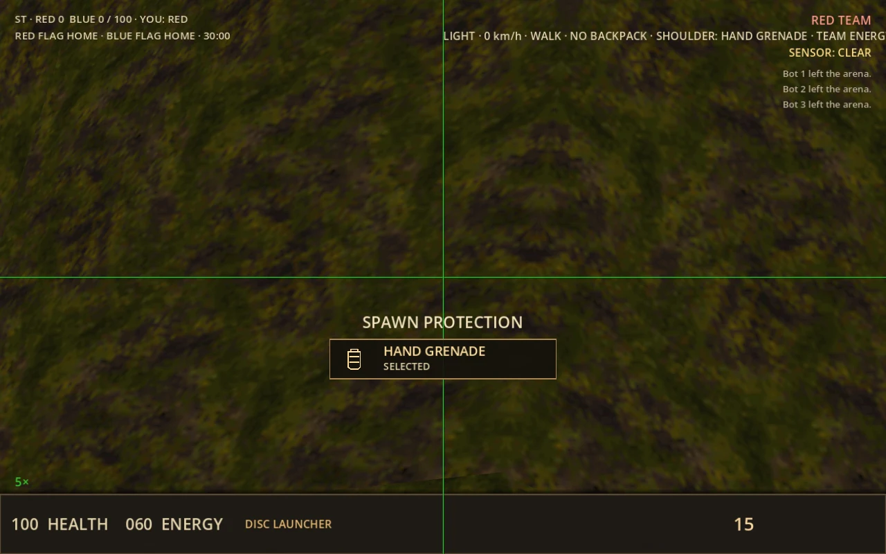
Command your team
Powered vehicle terminals support transport and armed crew roles; see ST vehicles & bot air support for the full roster and controls.
Press C on desktop or choose COMMAND PDA in the VR wheel. The map shows friendly units, equipment, public flags and sensor-known enemies. Select an ally and FOLLOW to accept them as commander; commanders select units, choose MOVE/ATTACK/DEFEND and a destination. Human recipients ACCEPT, DONE or DECLINE. Orders expire after three minutes or lifecycle changes. The EQUIPMENT tab allows CONTROL SELECTED for operational cameras or turrets; Use/Escape exits. Remote control leaves your player vulnerable and is unavailable while mounted or carrying a flag.
Source notes: ST-TRIBES.md · TRIBES-MOVEMENT.md · TRIBES-LOADOUT.md · ST-VEHICLES.md · ST-COMMAND.md · TRIBES-DEPLOYABLES.md
↑ ContentsFIELD MANUAL / 10
ST vehicles & bot air support
Buy the right craft, clear the bay and keep the crew working.
Vehicles belong to ST and require a map with a usable vehicle station. Purchase at a friendly or eligible neutral powered terminal, with sufficient team energy and a clear spawn pad. A new vehicle takes three seconds to become boardable. A team can reserve three of each type; the match has a shared limit of 18 hulls.
| Vehicle | Energy | Seats | Role |
|---|---|---|---|
| Scout | 600 | Pilot | Single-seat flyer with rockets. |
| Wildcat | 450 | Driver | Fast terrain-following gravcycle; no fixed weapon. |
| Shrike | 750 | Pilot | Fast fighter with direct-hit blaster. |
| LPC | 675 | Pilot + 2 passengers | Light transport; passengers use personal weapons. |
| HPC | 875 | Pilot + 4 passengers | Heavy transport with slower acceleration. |
| Havoc | 1,000 | Pilot + 5 passengers | Large air transport; passengers supply firepower. |
| Beowulf | 1,100 | Driver + gunner | Ground-following grav tank with ballistic mortar. |
| Thundersword | 1,250 | Pilot + bombardier + tail gunner | Bomber with gravity bombs and rear blaster. |
| Jericho | 1,500 | Driver + gunner | Deployable mobile inventory base with defensive turret. |
Boarding and crew
Only Light armour can pilot or drive. Medium and Heavy may take passenger or weapon seats. Approach an empty reachable seat and press Use. Use or Jump ejects; allow the short reboarding lock to expire before trying again. Flag carriers cannot board, and a mounted player cannot collect a flag or refit armour. Empty vehicles can be stolen; a deployed enemy Jericho cannot.
| Action | Desktop | VR |
|---|---|---|
| Thrust / strafe | Movement keys; steer with mouse yaw. | Movement stick; turning stick controls yaw. |
| Aircraft altitude | Pitch and the usual jet binding. Clear a covered bay before climbing. | Turning stick up/down controls lift; centre holds altitude. |
| Ground vehicles | Terrain-following height is automatic. Jericho cannot strafe. | Terrain-following height is automatic; aircraft lift input has no effect. |
| Fire assigned weapon | Primary fire. Mouse aim controls the applicable weapon seat. | Weapon-hand trigger, with tracked weapon aim for armed seats/craft. |
| Board / leave | Use/E; Jump also ejects. | Use; Jump also ejects. |
Crew weapons and repairs
Scout and Shrike carry pilot weapons. The Beowulf or Thundersword pilot can use the main weapon when its crew seat is empty; an occupied weapon seat takes control. Ordinary transport passengers keep their own guns and cannot steer. An unpiloted aircraft descends, and craft destruction ejects occupants. Repair guns can restore friendly hulls; friendly-fire policy still applies.
Deploy a Jericho
Stop on level ground and press Fire as driver to deploy. Release before pressing again to pack up. The deployed base stays put when empty. Friendly players use the rear service point for team-funded refits, healing and ammunition. With no gunner aboard, the turret engages visible enemies within 60 m; a seated gunner takes manual control.
What bots can do
Teams of six or more bots can assign Light pilots: one per six bots, up to two per team. These pilots walk to stations, pay normal prices, wait for construction, board Scout or Shrike craft and fly using ordinary controls. They leave covered bays horizontally before climbing, avoid nearby obstacles and patrol midfield approaches. They fire at perceived, exposed opponents and can eject if stranded. Shared bays launch one craft at a time.
Most bots remain infantry, and flag carriers retain flag duties. This is basic Scout/Shrike air support; coordinated transport pickups, passenger crews and autonomous operation of the other vehicle types are not implemented.
Source notes: ST-VEHICLES.md · ST-T2-CLASSIC.md · tribes_vehicles.gd · run_live.py
↑ ContentsFIELD MANUAL / 11
Titanball: escort the BA-2
The pilot is the objective. The team makes the pilot’s route possible.
TB is a prototype payload mode on Ashfall Boulevard and Cindercoil. Red attacks and Blue defends, using the nine TF classes with Quake loadouts. Red must pilot the BA-2 to Blue’s base; Blue wins on timeout. Both routes are 350 m long, with checkpoints at 80 m and 230 m.
During preparation, attackers are inside a closed hangar and defenders can take positions. Red may board, but the robot stays parked until the gate opens. Approach the belly ladder and jump to board. Boarding gives the pilot 200 HP and permanent 200 armour protection. Voluntary exit locks for ten seconds; then release the boarding jump and jump again, or Use, to dismount. A replacement must wait until the empty robot stops for three seconds and its ladder redeploys. Acceleration and braking each take five seconds.
The pilot cannot move independently or switch to personal weapons. The hull accepts direct heavy ordnance such as rockets, grenades, pipebombs, detpacks, Heavy fire, sentry fire and Titan cannon fire. Small arms and ordinary nearby splash do not pass damage through. Permanent tier-2 armour is restored after each hit, but lost health persists; there is no cockpit regeneration apart from applicable class abilities. The robot’s legs and cannons do not forward hits to the pilot.
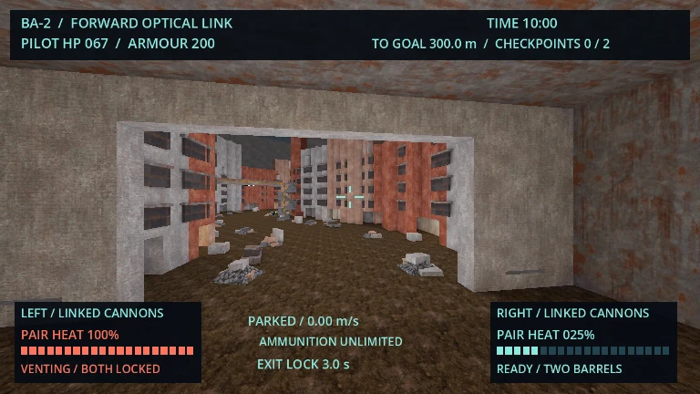
On delivery Red scores; on timeout Blue scores. Checkpoints award their extension only when the robot’s rear footprint clears the gate, moving later Red respawns forward. A player crossing alone does not trigger it. Six universal dispensers serve either team; natural pickups and normal TF spawn-proximity resupply are absent. Escorts should secure those stations and elevated firing lanes. Defenders should choose heavy weapons and avoid the moving foot envelope.
The cockpit’s forward monitor is the pilot’s outside view. Cannon pairs use shared heat and venting limits; check the display rather than assuming continuous fire. Human balance and headset comfort remain experimental.
Source notes: TITANBALL.md · TITANBALL-BALANCE-2026-09.md
↑ ContentsFIELD MANUAL / 12
The weapon field guide
Choose by distance, ammunition and firing behaviour.
The same map pickup can provide a different gun under another ruleset. Weapon families are gameplay adaptations, so do not assume every rule from the original game applies. Doom, Quake and UT99 use shared ammunition without manual magazine reloads. CS weapons require magazines and actions. Tribes adds personal energy and armour restrictions.
Doom: the default arsenal
| Weapon | Behaviour / approximate cycle | Use it for |
|---|---|---|
| Fist / chainsaw | Fist 2-20 damage, 0.57 s. Saw 2-20, 0.114 s. No ammunition. | Close contact. VR fists need a physical swing; saw follows blade contact. |
| Dual pistols | 6/12/18 hitscan per shot; 0.40 s per pistol; shared bullets. | Accurate opening shots. Both hands have independent cycles and aim in VR. |
| Shotgun | 7 pellets, 1 shell, about 1.00 s. | Reliable close-to-medium pressure; much of the spread is horizontal. |
| Super shotgun | 20 pellets, 2 shells, about 1.63 s. | Heavy close bursts, followed by a long vulnerable cycle. |
| Chaingun | 5/10/15 hitscan; 1 bullet every 0.114 s. | Sustained pressure. Initial shots are tighter than continuous fire. |
| Rocket launcher | 20-160 direct plus radial damage; 1 rocket, 0.57 s. | Leading targets and splash. Self-damage enables risky rocket jumps. |
| Plasma rifle | 5-40 damage traveling bolts; 1 cell, 0.086 s. | Continuous projectile pressure; lead targets. |
| BFG 9000 | 40 cells; 0.86 s charge, 1.72 s cycle. Projectile, 40 forward tracer rays and a 9 m radial blast. | Open a defended area. The radial component excludes its owner; walls still protect. |
There are no manual reloads in this family. Shotgun “reload” animation is its automatic shot cycle. The BFG’s forward tracer origin is the shooter’s location when the projectile impacts: position matters after launch as well as before it. Damage figures are approximate and precede armour.
Quake: momentum and reliable projectiles
| Weapon | Behaviour | Practical distinction |
|---|---|---|
| Axe | 20 damage; 0.5 s cycle. | Swing physically in VR; trigger fires on desktop. |
| Shotgun / super shotgun | 6 / 14 pellets at 4 damage each; 1 / 2 shells; 0.5 / 0.7 s. | Super shotgun falls back to shotgun with one shell. |
| Nailgun / super nailgun | 9 / 18 damage nails; 1 / 2 nails every 0.1 s. | Traveling nails need lead. TF uses different nail damage and class substitutions. |
| Grenade launcher | Bouncing, gravity-affected grenade; 2.5 s fuse; 120 radial damage. | Bounce into approaches or deny a doorway. |
| Rocket launcher | 31.25 m/s; 100-120 direct plus radial damage to other targets. | Splash and rocket jumping; watch your own health. |
| Lightning | 30 damage per cell every 0.1 s, 18.75 m reach. | Short beam control. Submerged fire discharges remaining cells. |
UT99: learn both firing modes
Right mouse or support trigger is alternate fire. Charged weapons fire on release; menus, switching and death cancel charges. Keys 8, 9 and 0 reach sniper, Ripper and translocator, and the wheel reaches all owned weapons.
| Weapon | Primary | Alternate / technique |
|---|---|---|
| Impact hammer | Hold charge, then release. | Smaller surface strike. Aim down, jump and release charge for a health-costing impact jump. |
| Enforcer | Accurate single shots. | Faster, wider spread. A single Enforcer is used. |
| Bio rifle | Arcing sticky sludge. | Hold and release a larger energy-consuming glob. |
| Shock rifle | Hitscan beam. | Traveling orb; shoot it with the beam for a radial combo. |
| Flak cannon | Eight bouncing fragments. | Arcing explosive shell that releases fragments. |
| Minigun | Controlled fire. | Faster, less accurate fire. |
| Rocket launcher | Hold and release up to six rockets. | Load bouncing grenades. |
| Pulse gun | Rapid bolts. | Short-range continuous beam. |
| Redeemer | Slow, large-radius warhead. | Steer with weapon aim. Costs ten rockets; no possessed camera. |
| Sniper rifle | Long-range shots with head damage. | Desktop zoom; in VR align an eye behind the physical scope. |
| Ripper | Bouncing blades with head damage. | Explosive blades. |
| Translocator | Throw destination disc. | Relocate to a clear disc destination; drops a carried flag. Disabled in Assault. |
Outside Assault, shock caches also supply the sniper and minigun caches supply the Ripper. Translocator is issued at spawn. UT uses the existing four ammunition pools rather than separate original-game inventories. The VR scope magnifies only its lens view; it does not change the headset’s field of view.
CS16: twelve weapons, magazines and sights
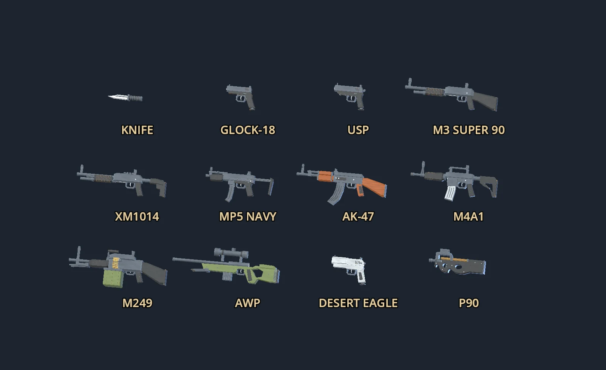
| Weapon | Handling | Role |
|---|---|---|
| Knife | Desktop slash/stab; VR physical swing, alternate binding for stronger stab. | Emergency close combat. |
| Glock-18 | Semi-auto or burst, toggled with alternate fire. | Starting T pistol in DE. |
| USP | Semi-auto, suppressor toggle. | Starting arena CS / CT pistol. |
| Desert Eagle | Fresh trigger press for each shot. | Deliberate pistol shots. |
| M3 Super 90 | Individual shells and a full VR pump after every shot. | Close-range burst with a manual action. |
| XM1014 | Individual shells; automatic cycle between shots. | Repeated close-range fire. Charge after loading an empty action. |
| MP5 Navy | Automatic; physical charging handle and optional slap release. | Mobile automatic fire. |
| P90 | Automatic; top-mounted magazine. | Sustained close-range pressure. |
| AK-47 | Automatic; T-only purchase in DE. | Rifle fighting; control bursts. |
| M4A1 | Automatic, suppressor toggle; CT-only purchase in DE. | Versatile rifle fire. |
| M249 | Automatic; physical feed cover, box and belt. | Sustained support, with a long handling sequence. |
| AWP | Bolt action; cycle raise → pull → close → lock in VR. | Long-range shots with scope. Reposition after firing. |
Glock, USP and Deagle require a fresh press for each normal semi-automatic shot. Use sights: CS has no aiming laser. Sight height above the bore means very close cover can block the bullet even when the sight picture is clear. On desktop R reloads and empty guns can reload automatically with reserve ammo. Shell reloads can be interrupted by firing once a shell is loaded.
Tribes: personal weapons and utilities
| Weapon | Purpose / constraint |
|---|---|
| Blaster | Energy-powered fallback; competes with jets for energy. |
| Plasma gun | Projectile pressure at practical combat ranges. |
| Chaingun | Sustained fire with a half-second spin-up and three-second coast-down. |
| Disc launcher | Explosive discs that accelerate after launch; plan lead and splash. |
| Grenade launcher | Bouncing, arming explosives; benefits from teammate designation assistance. |
| Laser rifle | Damaging precision weapon; requires Light armour and energy pack. |
| ELF gun | Close-range energy disruption; shares the personal-energy economy. |
| Heavy mortar | Heavy-only ballistic siege weapon. Bounces before arming; large blast. |
| Repair gun | Repair equipment and armour condition; supplied by repair pack outside main gun slots. |
| Targeting laser | Non-damaging team designation, not the laser rifle. |
| Grenades / mines | Thrown utility. Mines arm after resting, can detect their owner and can chain-detonate. |
Projectile velocity can inherit your movement depending on the weapon, making a high-speed pass different from a stationary shot. The image enhancer is available with every weapon and utility; it does not turn a projectile into hitscan.
Source notes: README.md · SESSION_FEATURES.md · WEAPON_VARIANTS.md · CS16-LOADOUT.md · TF-ARSENAL-AUDIT.md · TRIBES-LOADOUT.md
↑ ContentsFIELD MANUAL / 13
VR reloading & physical equipment
Treat the magazine, chamber and action as separate states.
These instructions apply to CS weapons. Doom, Quake and UT99 do not use this manual reload system. For the MP5 slap sequence, lock the handle back before replacing the magazine; follow its dedicated steps below. Hand roles mirror with gun handedness. If an interaction is interrupted by menus, switching hands or tracking loss, release the grip and deliberately resume from the visible state.
- Eject or remove
Press weapon-hand A/X. On eligible long guns, hold offhand grip or trigger at the magazine and pull clear. Pull down for bottom magazines and up for P90. M249 needs its cover open. Pistols use button ejection.
- Draw from your offhand hip
A contextual pouch appears when reserve ammunition is available. Grip or trigger around the offhand hip and pull the replacement at least 12 cm away relative to your hips.
- Seat the magazine
Guide its visible feed end into the well. Pistol magazines stand upward from the palm, allowing the controller bodies to remain apart. A retained old magazine goes back with its actual remaining rounds; reinserting it does not refill it.
- Chamber if empty
Release the magazine grab, grab the slide/bolt/handle, pull back and release. A tactical reload retains a chambered round; a new magazine is then enough. Capacity includes that chambered round.
Weapon-specific actions
| Weapon | Sequence to remember |
|---|---|
| Pistols | Rack a locked slide, or use one brisk sideways weapon-hand movement to release it. Magazine insertion alone cannot fill an empty chamber. |
| AK-47 | You may knock a partly used seated magazine free with the replacement against its catch, then insert. Rack only if empty. |
| MP5 / HK slap | Pull fully back, lift and lock, then replace the magazine and slap. See the dedicated sequence below. A normal pull-and-release rack also works. |
| M3 | Feed shells under the receiver. Complete a back-and-forward pump after each shot. With Auto Offhand Hold on, keep offhand grip and release weapon grip to transfer to the pump hold; take it back before firing. |
| XM1014 | Feed shells underneath. Automatic cycling handles subsequent shots; an empty gun needs charging after the first shell. |
| AWP | Grip the bolt knob and raise, pull back, push forward, lower to lock. Forward motion alone is not enough. You can re-grip an unfinished bolt at its current position. |
| M249 | Lift cover, remove old box, insert new box, grab its belt and lay the leader in the tray, move hand away, close cover, pull and release handle. A loose belt blocks closure; an open cover blocks firing. |
USP silencer changes in VR require the offhand close to the muzzle before a fresh alternate-fire press. Finish magazine or slide handling first. Keep an eye on the loaded/reserve HUD, visible magazine and action position; firing with an empty chamber will not be fixed by extra trigger presses.
MP5: lock first, magazine second, slap last
This sequence also applies to the MP5 bought in DE. Mirror the hand roles if you use a left-handed gun.
- Pull and lock the charging handle
Grip the handle, pull it fully rearward, then lift into the notch while it is still fully back. Let go. The handle stays raised and rearward while you change the magazine.
- Replace the magazine
Eject or physically remove the old magazine, draw a replacement from the offhand hip and seat its feed end in the well. A loaded magazine must be seated before the slap can complete the reload.
- Release and slap
Release the magazine grip, then strike the latched handle downward with a fresh offhand stroke. A deliberate sideways palm swipe also counts. The handle closes and chambers the round.
- Follow the visible state
The HUD asks for the magazine before asking for the slap. Reaching upward from the well, slow touches, withdrawal and tracking jumps do not count. After an interruption, release and resume from the visible latch and magazine state.
A tactical reload can preserve a chambered round. Slapping a locked handle without a seated loaded magazine does not finish this sequence. Extra grip samples or a menu interruption do not silently release the locked handle.
Support and virtual stock
Two-handed aiming is on by default for eligible long guns. Grip near the fore-end to align the weapon between the hands. It changes orientation without changing damage, spread or ammunition. Virtual Stock is an optional, saved VR Controls setting, off by default, which stabilises eligible supported long guns near the shoulder. M3 Auto Offhand Hold defaults on. Neither option loads ammunition for you.
Source notes: CS16-LOADOUT.md · WEAPON_VARIANTS.md · turn_panel.gd
↑ ContentsFIELD MANUAL / 14
Settings, accessibility & identity
Set up the view, sound and controls around how you play.
Open SETTINGS before joining or during a match. Changes apply immediately and save for the next launch. Available hardware determines which VR and tracking controls can actually operate. Existing saved preferences may differ from the fresh defaults below.
Graphics and presentation
| Option | Range / default | What it changes |
|---|---|---|
| Render resolution | 50-125%; 100% | Internal image resolution. Lower it when GPU load is too high. |
| Anti-aliasing | Off, 2×, 4×, 8× MSAA | Edge smoothing. Fresh desktop default 4×; Android 2×. |
| Textures | Pixelated + mipmaps, trilinear, anisotropic | Texture filtering; anisotropic is the fresh default. |
| Baked lighting | Classic / Contrast (experimental) | Map-light presentation. Classic is default. |
| Shadows | Off by default | Dynamic shadow rendering and its cost. |
| Avatar spring bones | Off by default | Secondary hair/clothing motion. Existing explicitly saved preferences persist. |
| Desktop display | Windowed / fullscreen | Windowed is fresh default; desktop only. |
| Desktop field of view | 60-110°; 85° | Desktop view angle. VR field of view is runtime-controlled. |
| VR HUD size | 70-140%; 100% | Readability of the floating HUD. |
| VR HUD height | −65 to +55 cm; −46 cm | Vertical HUD position relative to the eyes; HUD sits at 1.5 m depth. |
| Foveation | Hardware-dependent | Eye tracking exposes Fovea Size Off/Small/Medium/Large; otherwise Static Foveation Off/Low/Medium/High. Runtime support controls the result. |
VR comfort and control preferences
| Option | Behaviour |
|---|---|
| Smooth / snap turning | Smooth is default at 120°/s, adjustable 30-360°/s. Snap default is 30°, adjustable 15-90°. |
| Stick-role mirroring | Change movement and turning roles independently of gun handedness. |
| Seated mode | Raises the view toward standing eye level without scaling reach. Body tracking temporarily suspends compensation. Recenter after changing posture. |
| Physical jump | Opt-in. A deliberate upward head motion requests the ordinary jump while grounded. Disabled in seated mode. |
| Physical crouch / prone | Enabled by default. Measured posture controls body/view interactions where supported. |
| Two-handed aim | Default on; support grip engages eligible weapons. |
| Physical TF abilities / AS buttons | Default on. Enables touch/throw interactions; Use remains an alternative. |
| Tracked-leg animation / face expressions | Animate tracked legs while still defaults off. Experimental face expressions default on; runtime/model support is required. |
| Virtual Stock / M3 Auto Offhand Hold | Stock defaults off; M3 transfer helper defaults on. |
| Bindings reset | Resets only the chosen Desktop or VR tab. Esc/controller menu remain recovery controls. |
Audio and communication
Separate sliders control Master, Sound Effects, Music, Announcer and Voice Playback. Fresh defaults are 100%, 100%, 30%, 80% and 80% respectively. Output cycles through available devices. Spatial Audio offers Steam Audio HRTF for headphones or Standard Stereo. Open Voice Chat & Microphone for input, transmission mode, activation threshold and mutes. Voice starts in push-to-talk mode. Listen-only stops microphone capture; voice activation transmits above a configurable threshold. The panel shows the input level and supports global and individual mutes. Player-specific mutes last for the current session.
V is desktop proximity PTT; B is team PTT except contextual buying. Y sends team text, Enter public chat. In VR, support grip is proximity PTT. For team radio, reach to the offhand shoulder, grab with support grip, then hold support trigger. Release to stop. Radio temporarily takes priority over grenades, offhand firing and support aiming.
Haptics
Controller strength ranges from 0% to 100%, independently of optional vest intensity. It scales weapon, pickup and interaction pulses. Haptics settings also offer optional bHaptics vest feedback through supported native Bluetooth or OSC configurations. The vest is not required for controller feedback. Vest feedback defaults off; native intensity defaults to 25%. Choose Native Bluetooth, scan and connect a supported device, or set an OSC receiver IP/port (default 127.0.0.1:9001). OSC strength is adjusted at the receiver. Recoil, Damage, Hazards and Healing are individually enabled by default; Pickups defaults off. TEST VEST sends a short pulse; STOP disables output.
Tracking, avatars and calibration
Settings → Tracking offers Recenter VR, Calibrate Body, SlimeVR OSC and Body Tracking. With hip and both feet/lower-leg trackers, an upright T-pose held for about 1.1 seconds can calibrate; a bell and haptic pulse confirm. Tracking availability depends on headset, runtime and external devices. Eye tracking and measured blinks require compatible runtime/model support; voice drives supported avatar mouth expressions.
MODEL lets you choose bundled VRMs or import a self-contained custom VRM up to 25,000,000 bytes. Select USE THIS MODEL to apply. LOAD SELECTED PREVIEW explicitly loads a preview and can stall the first time. Models are transferred through the host to other players. In Tribes, the armour body retains your avatar’s head and hands when compatible.
Identity and music before a match
The launcher saves your selected name, cosmetic clan tag and avatar. Q3A colour codes also work in the in-game player fields; see The desktop launcher for the code table and preview. Choose custom soundtrack scopes and track order in Music & playlists. Music volume remains independent of effects, voice and the announcer.
Source notes: preferences.gd · panel.gd · bindings.gd · VR.md · VOICE.md · TRACKING.md · AVATARS.md · AUDIO.md · BHAPTICS.md
↑ ContentsFIELD MANUAL / 15
Music & playlists
Keep the approved mode soundtrack, or build a local playlist for your maps.
The main menu plays Shadows Awaken Within; the waiting lobby plays Singularity (calm), both by vitalezzz. They loop and crossfade as the game changes context. Each gameplay mode has its own bundled CC0 default:
| Mode | Default track | Mode | Default track |
|---|---|---|---|
| DM | Silver Bullet | TDM | Brute Force |
| CTF | Chase | KOTH | Open Warfare |
| IG | Final Hour | IF | Black Diamond |
| FT | Energetic Electro Tune | CC | Megasong |
| TF | Devoted Guard | TB | The 9th Circle |
| AS | Fight for Better Future | DE | Infiltration |
| ST | Singularity (action) | Menu / lobby | Separate themes listed above. |
Bundled mode tracks use softened loop boundaries and leave map ambience audible underneath. DE's default music is quieter. Lowering or muting default music restores the ambience bed independently of effects and voice. An ordinary custom gameplay playlist replaces the default and suspends that ambience bed. None of these playlist scopes changes the menu or lobby theme.
Prepare a playlist in the launcher
- Choose when it plays
Open Music playlists. Choose Global, a mode, or an installed map. Enable Climax / win_ only if you want music for that context.
- Add and order tracks
Add Ogg Vorbis .ogg files. Move tracks up/down or remove entries, then Save playlist. Up to 256 tracks fit one launcher playlist. Your original audio files stay in place.
- Play or edit later
Restart the game to rescan. Use Load to reopen a saved launcher playlist. The launcher copies numbered tracks into its managed folder so your selected order survives the game's filename sorting.
Which music wins?
Map playlist → mode playlist → global playlist → bundled mode default. Files at the winning scope combine into one repeating queue, including any other music you already placed there. The final track wraps to the first. Context changes crossfade over about 2.5 seconds.
| Inside the external bgm/ folder | Meaning |
|---|---|
| 01_song.ogg / 02_song.ogg | Global gameplay tracks. |
| st_01.ogg / st/album.ogg | ST gameplay only. |
| ctf_t2_scarabrae_01.ogg / ctf_t2_scarabrae/ | Music for Scara Brae only; use the BSP filename without .bsp as the map ID. |
| tf.m3u or ctf_t2_scarabrae.m3u8 | Local OGG entries for that mode or map. |
| win_st_01.ogg or win_st/ | ST climax replacement. |
| win_ctf_t2_scarabrae.m3u8 | Map-specific climax playlist. |
On PC, bgm/ is beside the executable; source runs use the project folder. OPEN ASSETS identifies the managed location. M3U/M3U8 accepts local relative or absolute paths, not remote audio URLs. Entries are sorted by filename, including numeric ordering, rather than by the order of lines in the playlist. Non-OGG or missing files are ignored. The launcher handles this convention for you and does not overwrite unrelated playlists.
Climax music
The bundled cue is Tower Defense Theme. It can replace mode music for a flag carrier, a player/team near the applicable score limit, a Titan nearing delivery, a completed Assault opening objective or a planted DE bomb. The cue follows the game state and fades back when that condition ends. Ordinary spectators do not inherit a player's personal or team cue.
Climax selection uses win_ map → win_ mode → win_ global. Without a matching win_ playlist, ordinary custom music continues; the bundled cue is used when neither custom choice matches. Tracks intended only for climax are excluded from normal playback.
Custom music stays on your device. It is not sent to the server or included in client updates. Settings → Audio → Music changes both ordinary and climax volume. Source and licence credits for all bundled tracks are included in the music credits.
Source notes: AUDIO.md · DESKTOP-LAUNCHER.md · SOURCES.md · modes.json · contexts.json
↑ ContentsFIELD MANUAL / 16
Maps, votes, hosting & replays
Keep the group together between rounds.
Map families
| Family | What to expect |
|---|---|
| Arena | Seven base Quake source ports plus 31 expansion arenas: 22 Q30, six Quake RCMD and three supplied BSP conversions. Supported lists share these additions. |
| CC / KOTH / CTF | Dedicated CC remodels and CTF Studies objectives remain. Seven ChaosUT adaptations bring KOTH to 11 maps; authored single hills stay fixed and multiple hills rotate. |
| TF | Pressureworks and Vesper Abbey, with resupply and separate capture areas. |
| AS | Six maps: HiSlop, Frigate, Pumpfac, Skyville, Twintower and Atlantica. |
| DE | Sixteen installed layouts: Aztec and Train reconstructions plus 14 Varq conversions. The active lists exclude retired DE/Dust2 variants. |
| ST | Twenty-five layouts: Stonehenge, Raindance, Katabatic and 22 Tribes 2 Classic adaptations. ST maps remain exclusive to ST. |
| TB | Ashfall Boulevard and Cindercoil, each with a 350 m Titan route. |
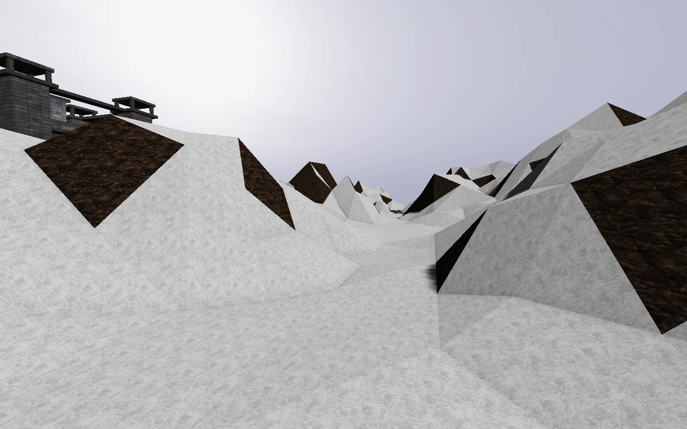
Maps live in the external maps/ directory; avatars in vrm/. Missing BSPs download from the host before joining. Custom imports need a compatible format and objective setup; the map guide explains supported entities. A file that loads as scenery is not necessarily a sound competitive objective layout.
Install the final expansion
The optional 0.22v expansion contains 78 new map BSPs, prepared map assets and combined rotations. It requires the compatible 0.22v-era game changes documented by this source edition; it does not update an older executable or PCK. Close the game, back up customised maplists, and extract it into the installation so maps/ sits beside the executable. In a source checkout, use the project directory that contains project.godot.
Restart after installation and check the mode's map selector. The archive replaces standard maplists with the combined lists; explicit server-config lists take precedence. Original author notices remain with the pack. Converted layouts adapt original geometry and objectives to FPSloppa: unsupported original-game scripting and some visual features are not reproduced.
Expansion availability does not imply equal bot performance on every map. Some converted Assault and KOTH layouts have limited short-match objective results; play with that limitation in mind when selecting a bot-only rotation. The expansion is separate from the launcher's automatic full-client update channel.
Teams and in-match votes
Menu → Teams & Votes lets you move to the smaller team, with a 30-second cooldown. Switching resets position and inventory, drops carried flags and grants no new spawn protection. A balance-teams vote redistributes players by frag ranking while preserving earned team scores.
In-match proposals last 25 seconds and need a strict majority of active humans present when called. The proposer votes yes automatically. Spectators and later arrivals cannot vote. Each player gets one ballot; proposals share a 60-second server cooldown. Map votes change immediately; mode votes restart on the current map subject to valid mode/map policy. Only operator-enabled choices appear.
The between-match ballot
At round end a 3×3 grid offers up to nine complete map/mode/loadout combinations. Click once to vote and click another card to change your choice. Highest tally wins at the deadline; ties and no-vote results use the first tied card in grid order. Active late joiners may vote here; spectators and bots do not. With a waiting lobby enabled, the same ballot continues on its wall beside the avatar mirror. Offline practice does not vote.
Host options to understand
| Setting | Effect |
|---|---|
| Mode, map, weapon rules | Defines the core match. Required arsenals and exclusive maps are locked by mode. |
| Frag / capture / hill / time limit | Chooses the relevant score target and time budget. TB uses its fixed timer; DE has separate round controls. |
| DE buy countdown | Preparation length, default 15 s, accepted 5-60 s. |
| Friendly fire | Dedicated policy; off by default. Enables teammate damage and applicable penalties. |
| Allowed modes and maplists | Dedicated server configuration controls rotation and vote choices. |
| Votes / waiting lobby | Votes can be disabled. Lobby is off by default; enabled lobby duration accepts 15-180 s. |
| Arena jetpacks | Server opt-in for DM/TDM/CTF/IG/IF/FT. Collect a pack and double-tap jump. Distinct from intrinsic Tribes jets. |
| TF Spy policy / Tribes buying energy | Dedicated options select disguise versus invisibility and finite versus unlimited team buying energy. |
Optional arena packs last for the current life and are removed by death or freezing. Double-tap Jump within 300 ms to activate; VR weapon-hand A/X also activates unless its CS reload binding takes priority. Movement input gives a short forward boost; no movement gives a lift and brief hover. Cooldown is eight seconds from activation, and the flight must end before another starts. This is a pickup-powered burst, unlike the sustained energy-powered Tribes jets.
Record, watch and study
DEMOS records matches and browses files in demos/. Recording works while playing in VR; playback uses desktop mode. Replays contain player/VR poses and combat events, but do not contain voice chat, maps or avatar files. Install matching maps and use a matching build; missing avatars fall back.
During playback, Tab switches players, C changes first-person/chase/free camera, P pauses and arrow keys seek five seconds. Space also pauses outside free camera. The free camera uses movement controls. Use replays to learn routes, check objective timing and watch the same encounter from another player’s view. Video export is available through the repository’s FFmpeg/Godot demo-video tool; see the session guide.
Source notes: MAPS.md · GAMEMODES.md · SESSION_FEATURES.md · SERVER.md · ARENA-JETPACKS.md · README.md · catalog.json
↑ ContentsFIELD MANUAL / 17
Troubleshooting & quick reference
When a control seems wrong, first check the current mode and interaction state.
| Symptom | Check / action |
|---|---|
| Update button instead of Play | A newer managed client is known. Download and install it, then relaunch. For source or older unmanaged installs, obtain a compatible build yourself. |
| Update stopped or interrupted | Close other game/launcher/asset workers. Start Launch-FPSloppa again for recovery; keep .launcher-update until it completes. Local program-file conflicts require attention before retrying. |
| Server row has no live status | Check its query port separately from its game port. Direct join can still work when the query service is unavailable. |
| Preload or submission failed | A temporary spectator slot is required. Check file validation, BSP upload permission, storage limits and cooldown; preload covers only the current map and announced avatars. |
| Custom playlist order seems wrong | The game sorts filenames even inside M3U files. Use the launcher ordering controls and save, then restart. Map scope overrides mode, which overrides global. |
| HK slap does not close the action | Pull fully back and lift into the lock before changing magazines. Seat a loaded magazine, release grip, then use a fresh downward or sideways stroke. Reaching up from the well is not a slap. |
| Cannot connect | Match game versions, host address and UDP port. For Internet hosting check the host firewall/router. 127.0.0.1 is only the same computer. |
| Weapon will not fire | Check loaded ammo, chamber/action, cooldown and wall obstruction. Close menus. Frozen, dead and spectator states suppress attacks; Titan pilots cannot fire personal weapons. |
| CS magazine inserted, still empty | An empty chamber needs charging. M3 needs a complete pump; AWP needs the lowered/locked bolt; M249 needs a seated belt and closed cover. |
| VR pouch does not appear | It is contextual and needs reserve ammo. Reach around the support-hand hip. Clear an active fore-end grab and pull the replacement away from your hips before insertion. |
| Flag will not score | Check the mode: ordinary CTF/ST require your flag home; TF uses its capture point. Spectators and dead players cannot score. Walls and height affect objective reach. |
| Bomb will not plant | Be a living T at A/B, complete the keypad, place within the arming window and use a reachable flat solid backing with defender access. Respect the 1.5 m height limit. |
| Cannot immediately respawn | FT/IF need a thaw or reset. DE waits for the next preparation. Ordinary arenas have a two-second manual delay. |
| ST station unavailable | Check team, reach, sightline, station health, generator power and team energy. |
| Cannot board ST vehicle | No flag, an available reachable seat, three-second deployment readiness and no reboarding lock. Piloting requires Light armour. |
| Cannot board Titan | Only Red can pilot. Check ladder, vacant cockpit and the stop/reboarding delay. Blue cannot board. |
| VR view or body height is wrong | Recenter after a posture change. Check seated compensation and tracking status; calibrate supported body trackers. |
| Voice works in one situation only | Check PTT binding, selected input, mute list and current radio context. DE separates living from dead; B opens buying during preparation. |
| Low frame rate | Lower render resolution/MSAA, disable shadows or spring bones, and check the runtime. Foveation availability depends on hardware. First-time map/avatar loads may stall. |
| Custom avatar or map missing in replay | Demos do not embed those files. Install the original matching map; absent avatars use the fallback model. |
Five habits that transfer between modes
- Read the mode, role and equipment before leaving spawn.
- Keep one retreat route and one useful supply location in mind.
- Use cover during firing cycles and manual actions.
- Watch the objective timer: a rescue, return, rotation or defuse can outweigh a kill.
- Communicate the location and action your team needs, then move to support it.
Glossary
| Term | Meaning |
|---|---|
| Hitscan | A shot resolved immediately along a line, rather than a traveling projectile. |
| Splash | Area damage around an explosion; geometry can block it. |
| Loaded / reserve | Rounds currently in the CS weapon versus ammunition available for reloading. |
| Personal energy | Tribes battery shared by jets, energy weapons and active packs. |
| Team energy | ST purchase/service budget shared by the team. |
| Use | A context-sensitive action, default E on desktop or movement-hand A/X in VR. |
| Main / weapon hand | The hand holding the primary gun; support/offhand is the other hand. |
| BSP / VRM / demo | Map file / humanoid avatar file / recorded match data. |
About the illustrations
Gameplay screenshots and rendered fixtures are copied from this repository’s existing captures, resized and encoded as WebP. They are not AI-generated gameplay. Diagrams are original, simplified teaching graphics; they are not map plans or exact collision visualisations. Source paths for every image are preserved in the asset manifest. This manual does not redistribute the original games’ art or promise exact original-game behaviour.
Source notes: README.md · VR.md · CS16-LOADOUT.md · ST-TRIBES.md · ASSET_CREDITS.md
↑ ContentsAPPENDIX
Sources & edition notes
Local game documentation and current source were used to resolve rules and defaults.
Updated source edition • 8 October 2026 • revision 12a638c. This edition includes the launcher, updater, approved CC0 soundtrack, HK reload correction, expansion integration and ST bot air support. These features require a matching current source build or a compatible packaged client; the edition date is not a release announcement. Later feature notes and current code take precedence over historical release prose. All external source links below point to the project repository. Offline gameplay explanations are fully included in the handbook.
- README.md Repository source
- GAMEMODES.md Repository source
- STANDALONE.md Repository source
- docs/DESKTOP-LAUNCHER.md Repository source
- deathmatch/ui/name_style.gd Repository source
- deathmatch/launcher/launcher.gd Repository source
- deathmatch/settings/bindings.gd Repository source
- VR.md Repository source
- SESSION_FEATURES.md Repository source
- docs/BOMB-DEFUSAL.md Repository source
- docs/ST-TRIBES.md Repository source
- docs/WEAPON-RESPAWNS.md Repository source
- docs/RELEASE-0.4v.md Repository source
- docs/WEAPON_VARIANTS.md Repository source
- docs/TITANBALL.md Repository source
- TF.md Repository source
- docs/KOTH-ROTATION.md Repository source
- docs/TF-ARSENAL-AUDIT.md Repository source
- deathmatch/modes/fortress.gd Repository source
- AS.md Repository source
- docs/CS16-GRENADES.md Repository source
- VOICE.md Repository source
- docs/TRIBES-MOVEMENT.md Repository source
- docs/TRIBES-LOADOUT.md Repository source
- docs/ST-VEHICLES.md Repository source
- docs/ST-COMMAND.md Repository source
- docs/TRIBES-DEPLOYABLES.md Repository source
- docs/ST-T2-CLASSIC.md Repository source
- deathmatch/bot_ai/tribes_vehicles.gd Repository source
- tools/tribes/run_live.py Repository source
- docs/TITANBALL-BALANCE-2026-09.md Repository source
- docs/CS16-LOADOUT.md Repository source
- deathmatch/vr/turn_panel.gd Repository source
- deathmatch/settings/preferences.gd Repository source
- deathmatch/settings/panel.gd Repository source
- TRACKING.md Repository source
- AVATARS.md Repository source
- AUDIO.md Repository source
- BHAPTICS.md Repository source
- deathmatch/audio/music/SOURCES.md Repository source
- deathmatch/audio/music/modes.json Repository source
- deathmatch/audio/music/contexts.json Repository source
- MAPS.md Repository source
- SERVER.md Repository source
- docs/ARENA-JETPACKS.md Repository source
- maps/FinalExpansion/README.md Repository source
- maps/FinalExpansion/catalog.json Repository source
- ASSET_CREDITS.md Repository source
Screenshot provenance: assets/manifest.json. Game and asset acknowledgements: ASSET_CREDITS.md. No live headset playtest was performed to produce this handbook.
↑ Contents